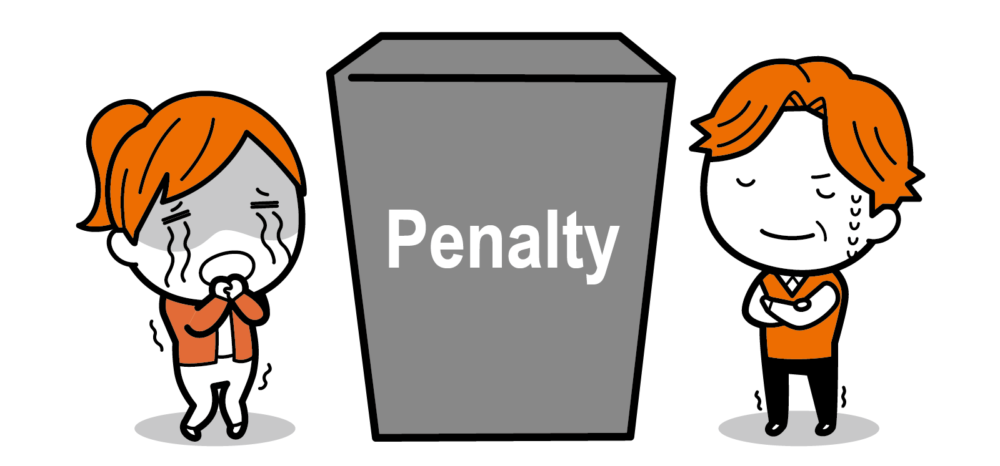

Copyright is "the right not to do specific acts without permission”

In simple terms, copyright is the right not to have one's copyrighted work "do specific acts without permission".

Such as, it can't be copied without permission, or remade without permission.
Japan has a 'non-formality' system, which means that a copyright is automatically granted the moment a work is created. Simply put, there is no need to register or go through any other procedures to obtain a copyright.
Even pictures drawn by elementary school children?

And reports written by students?

Yes.
Point
When a copyrighted work is created, a copyright is automatically granted (Article 17(2)).
In a broad sense, there are two types of copyrights: "moral rights," which protect the author's commitment to the copyrighted work, and "copyright (economic rights)", which protect the economic value. The following is an explanation of what rights are associated with each.
Moral rights
Moral rights cannot be assigned to others and cannot be inherited (Article 59, proviso of Civil Code Article 896). Therefore, even if a copyright is assigned, the moral rights remain with the author.
Moral rights cease to exist when the author dies. However, the Copyright Act states that even after the author's death, a person who provides or presents a copyrighted work to the public must not commit any act that infringes the moral rights of the author (Article 60).
Let us explain what moral rights are.
Publication Right (Article 18)
The publication right is, as the name implies, the right to decide how the author of an unpublished copyrighted work will make it public. The author of a derivative work may not publish the derivative work without the consent of the author of the original work.
- Whether to make it public or not.
- When will it be made public?
- In what form of publication (publication as a book, broadcast, screening, exhibition, public transmission, etc.)?

Do I need the student's consent to submit their painting to a city competition?
Of course, you must obtain the student's consent. If the student only submitted the painting to the teacher as
homework, it does not meet the definition of "published".
Since you are publishing it to third parties, you
need the author's consent.
There is also the issue of exhibition rights, as such art competitions usually
involve exhibiting the paintings somewhere.

I see, I will be careful.
Attribution Right (Article 19)
The attribution right, as the name implies, is the right to determine the name to be displayed as the author when the copyrighted work is offered or presented to the public.
- Whether to display a name or not.
- If displayed, whether it is your real name or an alias (pen name, artist's name, etc.).
In the case of derivative works, both the author of the original work (the second sentence of Article 19(1)) and the author of the derivative work have the attribution right. There are certain limitations on the attribution right and the following cases do not constitute infringement:
- When using a copyrighted work, the user may indicate the name already indicated in the copyrighted work. If the author's special intention requires a different name to be indicated, the user must follow the intention (Article 19(2)).
- If it is difficult to indicate the name and there is no risk of harm to the interest of the author in claiming to be the author, the name need not be indicated as long as it does not violate fair practice (Article 19(3)).
For example, when background music is played in a hotel lobby, there is no need to announce who the composer is, every single time.
Integrity Right (Article 20)
The integrity right is the right not to have the content or the title of the author's copyrighted work "altered (modified, mutilated, etc.)" against the author's intention without permission.
Can you crop a photo and use it, or change the text etc ... ?＊1
Yes. Please note that changing "," to ";" deleting a line break, and changing paragraph breaks or changing the wording for consistency may also infringe the integrity right＊2.

Well, if something like that is wrong, it should be fixed. It's common for student theses to have inconsistencies in terminology.
It is only with the author's consent that you can correct such inconsistencies. In other words, if the author corrects the inconsistencies, they may be more careful about it in the future. Then there is no infringement.

That's right.
Memo ＊1
Tokyo District Court, March 26, 1999, HANREI JIHO No. 1694, p. 142 [Dolphin Blue Case].
Memo ＊2
Tokyo High Court, December 19, 1991, HANREI JIHO No. 1422, p. 123 [Hosei University Prize Essay Case].
However, alterations are permitted in the following cases (Article 20(2)):
- If the use of a work is permitted by application of the following provisions: publication in textbooks (Article 33(1) and (4)), publication in substitute materials for textbooks (Article 33-2(1)), reproduction for the preparation of expanded textbooks (Article 33-3(1)), and broadcasting of school educational programs (Article 34(1)), the use of a work is unavoidable for school education (Article 33-2(1)).
- Alteration due to extension, reconstruction, repair, or redecoration of buildings.
- Program version upgrades and other modifications.
- Other modifications that are deemed unavoidable in light of the nature of the work and the purpose and manner of its use.
An example of (1) is converting difficult Kanji into Hiragana so that they are easier to read for younger students.
Regarding (4), due to the performance of the printing press, it may not be possible to reproduce the exact colors in the same way as the original, or when a singer may not be able to sing the original melody as it was sung because of the abilities of the singer.
It is difficult to determine the specific extent to which a work is "unavoidable. " If you are not sure, you should check with the author.
Point
There are three moral rights: (a) the publication right, (b) the attribution right, and (c) the integrity right!＊3
Memo ＊3
"The exploitation of a work in a way that is prejudicial to the honor or reputation of the author" is deemed an infringement of the author's moral rights (Article 113(11)). Although not strictly defined as a right, this provision is sometimes called the "honor and reputation right" as a fourth right.
Copyrights (Economic rights)
Copyrights as economic rights include the following＊4:
- Reproduction Right (Article 21).
- Stage Performance Right and Musical Performance Right (Article 22).
- On-Screen Presentation Right (Article 22-2).
- Public Transmission Right, Right of Making Transmittable, and Public Communication Right (Article 23).
- Recitation Right (Article 24).
- Exhibition Right (Article 25).
- Distribution Right (Article 26).
- Transfer Right (Article 26-2).
- Rent Out Right (Article 26-3).
- Translation and Adaptation Rights etc. (Article 27).
- Rights of the Original Author in Connection with the Exploitation of Derivative Works (Article 28).
Memo ＊4
Since it is difficult for a copyright owner to trace a user's act of perceiving or enjoyment of a work, such as by viewing, listening to, or reading a work, these are not subject to copyright (see Kaoru Okamoto, The Concept of Copyright, Iwanami Shinsho, 2003, p. 160).
There are a lot of different rights.
Yes. Some people may find it a little difficult. Copyright is sometimes called a "bundle of rights"＊5. First of all, it is good to understand that there are two major rights.

Only two!
There are two fundamental rights. The first is (1) the right to copy copyrighted works. The other is (2) the right to communicate the copyrighted work to the public.

Hmmm. Maybe I can remember that.
(1) The "right to copy" is like a prerequisite for (2) the "right to communicate the copyrighted work to the
public", because the more copies that are created, the more opportunities for communicating to the public.
For (2), "the right to communicate to the public," the number of rights has increased as the means of
communicating publicly have become more diverse due to technological advances.
We can communicate to the
people in front of us via "stage performances," "musical performances," "recitations," and "exhibitions." As
technology advances and copyrighted works can be fixed in some form, they can be conveyed to people far away.
These include "transfer," "rent out," and "distribution." Furthermore, "public transmission" and "making
transmittable" are used to convey copyrighted works to people far away, even if they are not in a tangible form.
How should we understand an adaptation?
Adaptation is the addition of new creative elements to a preexisting work. So, please understand that it is a sort of (1) the "right to copy".
Memo ＊5
Taku Inoue, Latest Copyright Introduction by SNS, Seibundo-Shinkosha, 2022, p. 53, explains that there are many copyright rights by comparing them to grapes.
As explained in Section 04 "What is Copyright?", a reproduction right is "the right not to be reproduced without permission". Copyright as an economic right can be transferred or inherited (Article 61(1)).
For example, Masamoto Nasu, author of the Zukkoke Sannin-Gumi (The funny trio) series, reportedly transferred (bequeathed) the copyrights of all his works to a literary organization in his will＊6.
"Adaptation" is a term unique to the Copyright Act, but it means the act of creating a derivative work by adapting it or making it into a film＊7.
The terms "public transmission right" and "right to make transmittable" may also be unfamiliar to you. The public transmission right is the right to transmit a copyrighted work to the public (to an unspecified or specified number of persons). For example, among public transmissions, automatic public transmission means putting the copyrighted work on a website for a large number of people to view, or posting the copyrighted work on a social networking service for a large number of people to see. Making transmittable means uploading a copyrighted work to a server, etc. to make it available for automatic public transmission, regardless of whether it has been transmitted or not＊8.
Memo ＊6
Donation of all copyrights, "Zukkoke Sannin Gumi", Masamoto Nasu's Wish for Children's Literature, Mainichi Shimbun, October 5, 2022, https://mainichi.jp/articles/20221004/k00/00m/040/188000c
Memo ＊7
The act of creating a derivative work, including translation, arrangement, or transformation for the sake of convenience, is sometimes called an "adaptation".
Memo ＊8
Article 23(1) brackets.
What makes "public communication" different from "public transmission"?
To use a simple example, a broadcaster broadcasting a TV program is a "public transmission," and a TV program shown on a TV set up in a cafeteria or other location for customers to watch is a "public communication".
I see, so you are saying that it is a device that can receive and watch something that has already been publicly transmitted.

By the way, the use of an ordinary household receiver to broadcast a copyrighted work does not constitute an infringement of the public communication right, even if it is for profit or a fee＊9.

I haven't made any public communications.
No, there is a possibility that Dr. Daiin may do this. For example, if you show a website in class and show actions such as "click here to view this", this is a public communication.
I didn't know that! I didn't know that such an act was subject to copyright too.
Point
Copyright is the right not to do specific acts without permission.
Memo ＊9
The second sentence of Article 38(3).
Neighboring rights
Neighboring rights are granted to those who "convey" copyrighted works (Article 89). Like copyrights, these rights are automatically granted upon performance, sound fixation, broadcasting, or wire broadcasting, and do not require any registration (Articles 89(5) and 101(1)).
Point
Neighboring rights protect those who play an important role in the conveyance of copyrighted works.
The following are the owners of neighboring rights.
Please see the texts of CRIC and other sources to find out what rights you have for each of them＊10.
- Performers: singers, actors, dancers, etc. who perform copyrighted works, etc.
- Record producer: a person who first fixed (recorded) the sound (e.g., a record company).
- Broadcaster: a person who engages in broadcasting as a business (TV broadcaster, radio broadcaster, etc.).
- Cable broadcasting operator: a person who engages in cable broadcasting as a business (cable TV, cable music broadcasting station, etc.).
Memo ＊10
IV. Author's rights and neighboring rights under the Japanese copyright law, Copyright System in Japan, CRIC: https://www.cric.or.jp/english/csj/csj4.html
Perhaps elementary school students imitating their idols and dancing are performers?
Yes. Permission is required if the dance is to be recorded or published on a website.
Does the record producer's "fixing the sound" apply to me recording my dog's barking on my phone?
Applicable. This fixed "sound" does not have to be a copyrighted work.
I'm a record producer too!

Protection Term
A copyright does not last forever but has a fixed protection term.
Copyright
- 70 years after the author's death from the time of the creation of the copyrighted work (Article 51).
- For copyrighted works under an unknown name, an unusual name, or a collective name, and cinematographic works, 70 years from the time of publication of the copyrighted work (Articles 52(1), 53(1), 54(1)).
Neighboring rights
- Performances are 70 years from the time of performance (Articles 101(1)(i) and 101(2)(i)).
- A record is from the time the sound is fixed (recorded) to 70 years after publication (Article 101(2)(ii)).
- Broadcasting and cable broadcasting is 50 years from the time of broadcast (Article 101(2)(iii) and (iv)).
Column
Wartime extensions
As for the copyright protection term, the rules add the protection term for copyrights that were not protected during World War II, and for which the Allied nations and Allied nationals had copyrighted in Japan on December 7, 1941 (the day before the war began), and for which copyrights were acquired from December 8, 1941 (the day Japan entered the war) to the day before the date the peace treaty came into effect for the Allied nations concerned (e.g., April 27, 1952, for the United States). For example, in the case of the United States, the copyright was acquired on April 27, 1952).
Oh, I know this one ... the protection term used to be 50 years and now with the TPP＊ it's 70!

That's right ...
My grandfather passed away about 10 years ago, so if there are any copyrighted works by him, they will be protected for another 60 years＊11. I wonder if I'll still be alive ...
Well, after 70 years, the grandchildren may not be alive, and more often than not, you may not know who the copyright owner is.
What if I want to get permission but can't find the copyright owner?
There is a system that can be used legally instead of having to pay compensation, based on a ruling from the Commissioner of Cultural Affairs.
Wait, the Commissioner of Cultural Affairs ...
Of course, there is a procedure, so we're not going to go directly to the Commissioner. I will explain this in detail in Chapter 4.
Point
The protection term is basically from the time of the creation of the copyrighted work to 70 years after the author's death.
Word
TPP (Trans-Pacific Partnership Agreement)
Abbreviation for the Trans-Pacific Partnership Agreement, an economic partnership agreement signed on February 4, 2016.
Memo ＊11
There is a caveat to Dr. Konaka's grandfather's story.
The end of the protection term is counted from
January 1 of the year following the year of the author's death, not from the date of the author's death (Article
57). Therefore, if the grandfather died on May 1, 2012, the protection term is counted from January 1, 2013,
which means that the protection term will expire 70 years later, on December 31, 2082.
Public Domain
Public domain means public ownership. It can be freely used by anyone without the permission of the copyright owner＊12. The following fall under this category.
- Copyrighted works whose protection term has expired.
- Copyrighted works for which the copyright owner has waived their rights.
- The copyright owner is dead and there are no heirs (Article 62(1)(i)).
A derivative work based on a public domain work is copyrighted from the time the derivative work is created. Note that even the derivative work is not in the public domain.
It's copyright "free".
The term "copyright free" is a bit of a dangerous term. Many people understand that "copyright free = no copyright", but this is not the case.
No?
Even if it says "copyright free", the rights may not be waived. In that case, it is not in the public domain.
Is it okay to use anything publicly available on the Internet without permission?
No, no.
First, let's check the license requirements.
Memo ＊12
To be precise, once in the public domain, anyone is free to perform acts that were the subject of copyright as long as they do not infringe on the moral interests of the author (Supreme Court, January 20, 1984, HANREI JIHO No. 1107, p. 127 [Ganshinkei Case]).
The protection term for moral rights after death is not limited and theoretically lasts forever. Therefore, copyrighted works that have entered the public domain 70 years after the author's death are also theoretically protected.
However, claims regarding moral rights after the author's death can only be made by the deceased author's
"spouse, children, parents, grandchildren, grandparents, or siblings", in other words, up to the second degree
of kinship (Article 116(1)). Therefore, if these persons die, there will be no claimant, meaning the end of the
protection term for moral rights after the author's death.
See Nobuhiro Nakayama, Copyright Law, 4th ed., Yuhikaku, 2023, p. 672.
License
A license is permission given by the author or copyright owner to the user, saying, "You may use it in this way". It may be granted individually upon request from the user, or it may be presented in advance by the rights owner.
When using the copyrighted works of others, be sure to check the terms of use, license, or license agreement to see if there is a license, and if so, what it entails.
Check the Terms of Use
One of the illustrations we have seen recently in various places is by "Irasutoya".
If you go to the website of "Irasutoya", you will find the "Terms of Use" page＊13.
The materials distributed on this site may be used free of charge by individuals or corporations, commercial or non-commercial, as long as they are within the scope of the terms of use.
Do not think, 'Oh well, I get to use it for free!'. You should not be reassured that you can use the service for free. You need to make sure that you are within the terms of use. Please read the FAQs carefully for detailed instructions on how to use the site.
Particular attention should be paid to the fact that it states that a fee will be charged for the use of 21 or more illustrations in a single production for commercial use.
Sites that provide such illustration materials and photo materials often have terms and conditions of use written in them such as "About Use," "Terms of Use," and "License," so be sure to check them carefully before using them.
Google Maps, which you may be familiar with, also requires credit＊14. Please be aware that removing the credit already displayed may constitute a breach of contract or an infringement of rights.
Memo ＊13
Irasutoya,
Terms of Use:
https://www.irasutoya.com/p/terms.html
Frequently Asked Questions: https://www.irasutoya.com/p/faq.html
Memo ＊14
Google Maps, General guidelines: https://about.google/brand-resource-center/products-and-services/geo-guidelines/
Creative Commons License
One of the most famous licenses is the Creative Commons License, but because the name is long, it is sometimes abbreviated to "CC". CC is used around the world as a tool for authors who publish their works to express their willingness to say, "You are free to use my work as long as you abide by these terms of use".
This material is also published under "CC BY 4.0" (this symbol is marked in the footer).

This is called "attribution," and as long as "the credit of the original author (name, title of the work, etc.) is indicated", modification and commercial use are allowed.
Please note that sometimes there are people who mistakenly think that because it has CC indicated, they are free to use it, but credit is required even for BY.
In CC, BY must be added. Other conditions can be combined with the indications as shown in the [Creative Commons example] below to provide the conditions desired by the author.
| Display | Meaning | Summary |
|---|---|---|
| SA | Share Alike | If you modify the work, you must distribute it under the same CC license as the original. |
| ND | No Derivatives | No derivative work is permitted. |
| NC | Non-Commercial | Must be non-commercial. |
For example, CC-BY-ND-NC means that you can use it as long as it is "credited, no derivative work is allowed, non-commercial". There are a total of six types.
There is also CC0, which indicates a waiver of rights. Works marked with CC0 are free to use＊15.
For more information, please visit the Creative Commons website＊16＊17.
Point
Be sure to check the license!
Memo ＊15
About CC0 - "No Copyright": https://creativecommons.org/publicdomain/zero/1.0/
Memo ＊16
Creative Commons: https://creativecommons.org/
Memo ＊17
In the Tokyo District Court, October 12, 2021 (2021 (wa) 5285) [Photo on Flickr Case], the court ruled that the defendant's use of a photo by the plaintiff (photographer) posted on Flickr under a Creative Commons License (BY-SA) on his website without giving credit to the author constituted an infringement of the public transmission right and the attribution right.
Even if you don't use CC, there are quite a few sites that require "credit" in their terms of use.
In that case, you must use the copyrighted work by properly indicating the name of the work and the name of the author.
Even if there are no terms of use or anything, if it's on the Internet, you're allowed to use it, right?
No. If nothing is written, it basically means that permission is required for use. Just because it is published on the Internet does not mean that you are free to use it.

Limitation of rights
As explained in Section 01 "What is the Copyright Act?", the Copyright Act aims to develop culture by considering not only the protection of authors' rights but also the "fair exploitation" of copyrighted works.
To promote "fair exploitation", the Copyright Act stipulates situations in which copyrighted works may be used without the permission of the copyright owner, and these are called "limitations of rights"＊18. These provisions limit the rights of copyright owners and define the scope of fair exploitation.
There are many limitations of rights, but the following are a few that may be relevant to you, the reader of this material. If any of these apply to you, you may use the material without the permission of the copyright owner.
Reproduction for private use (Article 30)
- It is OK to make your copies only for your use or for use within your home or another similarly limited area.
- The voyeurism of movies in theaters and other places is not allowed, even if you are the only one watching the movie (Article 4(1) of the Law for the Prevention of Voyeurism of Films).
- Downloading illegally uploaded copyrighted material knowing that the material is an infringement of copyright is also not allowed (Article 30(1)(iii)).
Memo ＊18
Note that the limitation of rights shall not be construed as affecting moral rights (Article 50), so consideration must be given to moral rights.
Downloading a favorite image from a website and using it as wallpaper for your phone is a reproduction for private use, right?
That is correct. But uploading the image to a social networking site is an infringement of the public transmission right since Article 30 only allows reproduction.
What about handing out copies of newspaper articles at staff meetings?
Such a meeting is for business purposes, so it is not private. It is not a reproduction for private use＊19.
What if it was a neighborhood association?
It is also hard to describe such gatherings as "within the family" or "within a similar limited range", so it does not apply to this group＊20.
Well, there was a book scan service case or something like that ...
In that case, a person who wanted to digitize a purchased paper book hired a service provider to scan it, but the person who wanted to use the copy had to make the copy themselves to be covered by Article 30＊21.
Private reproduction does not mean you can reproduce too widely ...
Memo ＊19
Tokyo District Court, July 22, 1977, Mutaireishu 9, 2, 534.
Memo ＊20
Tokyo District Court, November 8, 2022 (2022 (wa) 2229) held that "for the scope of use of a work to be considered 'within the limited scope of other similar uses', it is necessary to have at least a close and closed relationship to the extent that it is equivalent to a family".
Memo ＊21
Intellectual Property High Court, October 22, 2014, HANREI JIHO No. 2246, p. 92 [Book Scan Service Provider Case].
Use of Incidental Works (Article 30-2)
- It is OK for a copyrighted work to appear as a minor part of an accompanying photograph or video when it is taken.
- Public transmission of incidentally captured photos and videos is OK within a legitimate scope.
- But not if it unreasonably prejudices the interests of the copyright owner.
Reproduction in libraries, etc. (Article 31)
-
Libraries may reproduce works of library materials as a not-for-profit enterprise in the following cases:
- When one copy of a part of a published work＊22 is provided per person upon request of the user.
- When necessary for the preservation of library materials.
- When providing copies of out-of-print materials at the request of other libraries, etc.
Memo ＊22
As a general rule, "a portion" is understood to mean "up to half" of a work. For the operation of the National Diet Library, please visit Information about Copyright of the National Diet Library.
Information about Copyright: https://www.ndl.go.jp/en/copy/copyright/index.html
In addition, under the 2021 amendment to the Copyright Act, the provision of copies of materials for publicity by the state, etc., and other works specified by Cabinet Order as having special circumstances in which the provision of copies of the entire work is deemed not to unreasonably prejudice the interests of the copyright owner is covered in its entirety (Article 31(1)(i), bracketed).
Publication in textbooks, etc. (Article 33)
- May be published in textbooks to the extent necessary for school education.
- Translation, arrangement, transformation, and adaptation OK for inclusion in textbooks＊23.
- Requires notification and compensation to copyright owners.
Memo ＊23
Changes in type or terminology or other alterations that are unavoidable for school education (Article 20 (2)(i)) do not constitute an infringement of the integrity right.
Reproduction, etc. as examination questions (Article 36)
- Reproduction and public transmission (excluding broadcasting and cable broadcasting) of works that have already been published as examination or examination questions to the extent necessary for the examination＊24＊25.
- OK for examinations done in an online format.
- However, if it would unreasonably prejudice the interests of the copyright owner, it is not acceptable.
- Compensation must be paid when used for commercial purposes such as paid examinations, employment examinations, etc.
- When publishing past exam questions on the web or distributing them at open campuses, permission from the copyright owner is required since Article 36 is not applicable.
Memo ＊24
This provision was established because it is not appropriate to obtain permission from the copyright owner in advance due to the nature of examinations.
Memo ＊25
Although modification of questions that are necessary due to the nature of the question (e.g., fill-in-the-blanks questions) raises issues concerning the integrity right, modification is permissible to the extent necessary as an unavoidable modification (Article 20(2)(iv)) (see Tatsuhiro Ueno, Copyright Guide for Educators and Researchers, Yuhikaku, 2021, p. 148, and see also Nobuhiro Nakayama, Copyright Law, 4th ed., Yuhikaku, 2023, p. 441).
Performances, etc. not for profit (Article 38)
- Public stage performances, musical performances, on-screen presentations, or recitations of a published work are OK if they are not for profit, if no fee is charged by the audience, and if no compensation is paid to the performers.
- It is OK to lend copies of published works, such as CDs, when not for profit and when no fee is charged by the lender.
Point
Limitations of rights seek to promote fair exploitation by limiting the rights of authors.
The following two are particularly useful limitations of rights in the classroom and are discussed in detail in Chapter 2.
- Citation (Article 32(1)).
- Reproduction, etc. in educational institutions (Article 35).
Penal Provisions
We have explained various rules that you should comply with, but if you break those rules and the criminal court determines that you have willfully infringed copyright, the criminal penalty is imprisonment for not more than 10 years or a fine of not more than 10 million yen, or both (Article 119(1)).
It's still a crime to break the law ...
But copyright is a crime requiring a complaint from the victim for prosecution, right?
You can't be guilty
of a crime if no one submits a complaint, right?
The reason why the Copyright Act has this system is that there is no need to prosecute if the author or
copyright owner thinks it's okay.
However, just because you are not prosecuted does not mean you can do it.
It is still a violation of the law. As long as you are breaking the law, you never know when you might be
prosecuted.
The Copyright Act was amended in 2018 to make it an offense prosecutable without a complaint from a victim if it meets all of the following requirements (Article 123(2)):
- The purpose of obtaining compensation or the purpose of harming the interests of the right owner.
- Transferring, publicly transmitting, or reproducing for such purposes, in its original form, a copyrighted work that is offered or presented to the public for a fee (paid copyrighted work, etc.).
- Unjust harm is caused to the interests of right owners who are expected to gain from the provision or presentation of paid copyrighted works, etc.
Specifically, selling pirated copies of manga, movies, anime, etc., or publishing them on the internet can be a criminal offense even without a complaint from the rights owner.
On the other hand, derivative works such as fanzine (dōjinshi) sold at Comiket and other events remains a crime prosecutable upon a complaint from the victim.
